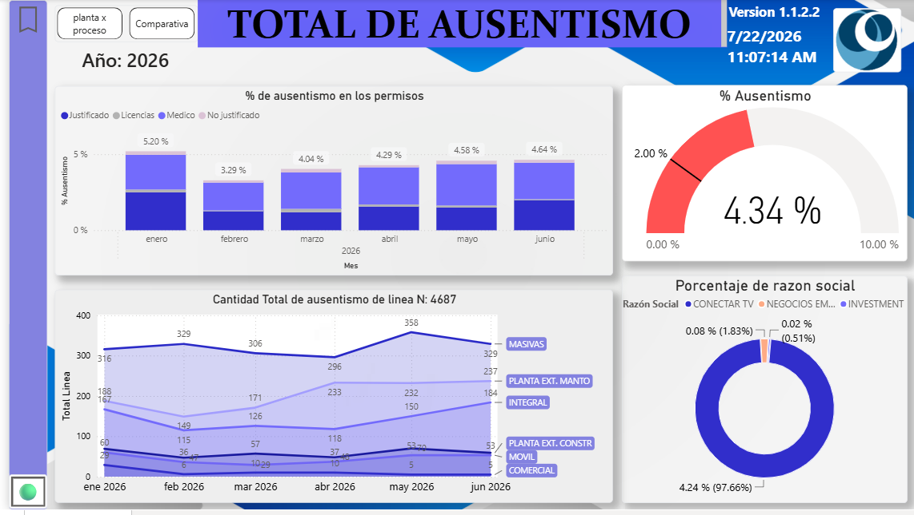
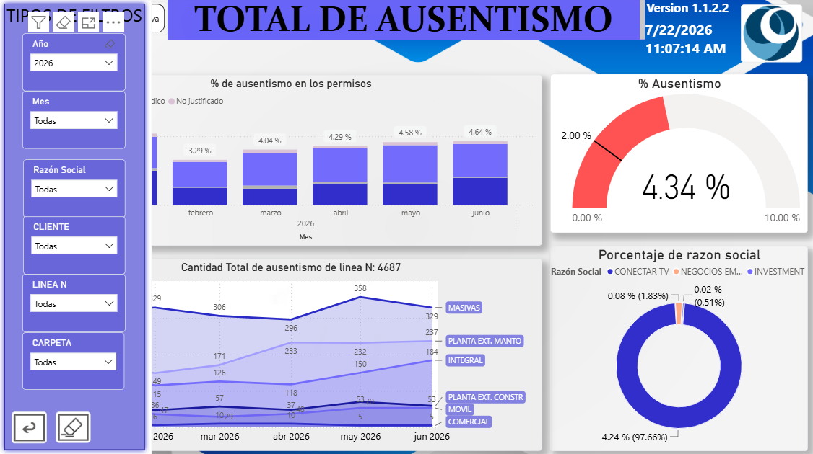
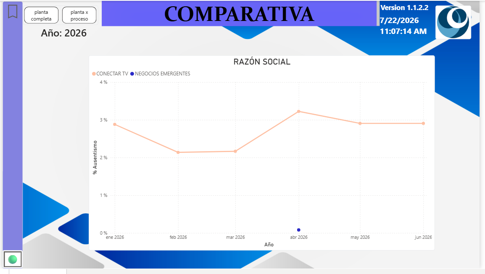
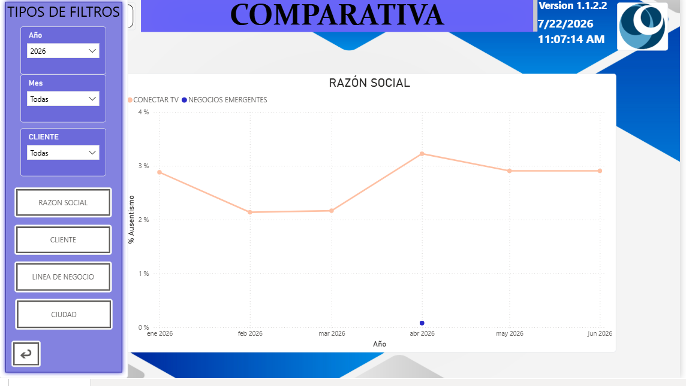

Análisis de Datos | Desarrollo de Software | Soporte IT
Perfil profesional
Estudiante de Ingeniería de Sistemas en la CUN, con formación técnica culminada y nivel tecnológico en curso. Experiencia laboral como Analista de Datos Aprendiz en administración y actualización de bases de datos, generación de informes y automatización de procesos. Con conocimientos en programación, análisis de información, redes informáticas y soporte técnico, fortalecidos mediante proyectos personales y académicos.
Me interesa contribuir en áreas de análisis de datos, desarrollo de software y soporte IT, combinando experiencia operativa, aprendizaje continuo y resolución de problemas.
Experiencia Laboral
CONECTAR TV
Cargo: Analista de Datos Aprendiz
Fecha de ingreso: 2026/05 - Fecha finalizacion: 2026/11
Administración y actualización de bases de datos, generación de informes, programación y automatización de procesos.
Interrapidísimo
Cargo: Auxiliar operativo
Fecha de ingreso: 2025/05 - Fecha finalizacion: 2026/05
Verificación de pedidos, inventario, Excel, zonificación y picking.
Olímpica
Cargo: Auxiliar de bodega
Fecha de ingreso: 2025/02 - Fecha de finalización: 2025/04
Verificación de pedidos mediante SAP.
Logytech Mobile
Cargo: Auxiliar de servicio tecnico
Fecha de ingreso: 2024/05 - Fecha finalizacion: 2024/12
Inventarios, Excel, control de stock, despachos y atención a transportadoras.
Green Waste S.A.
Cargo: Auxiliar de Bodega RAAES
Fecha de ingreso: 2022/10 - Fecha finalizacion: 2024/03
Manejo de personal, inventarios y equipos electrónicos.
Habilidades técnicas
Análisis de datos
- SQL y gestión de bases de datos
- Power BI, DAX y Power Query
- Excel avanzado y elaboración de informes
Programación y desarrollo
- Programación y desarrollo de proyectos de software
- Visual Studio Code
- Automatización de procesos
Redes y soporte IT
- Fundamentos de redes y configuración en Cisco Packet Tracer
- Conocimientos de soporte técnico informático
Experiencia operativa complementaria
- SAP, inventarios, control de stock y logística
Estudios
-
CUN: Ingeniería de Sistemas
- Técnico (culminado)
- Tecnólogo (en proceso)
- Excel Avanzado - SENA
- Manejo de herramientas Microsoft Office 2016: Excel (SENA)
Proyectos Destacados
Dashboard de Ausentismo Empresarial
📊 4 páginas de análisis
📈 Más de 4.600 registros procesados
🔍 Indicadores de ausentismo por línea de negocio
⚡ Automatización de métricas con DAX
Desarrollo de dashboard en Power BI para el seguimiento de indicadores de ausentismo, tendencias mensuales, líneas de negocio y razones sociales.

Resumen Ejecutivo

Filtros pagina principal

Comparativa de Indicadores

Filtros Detallado
Tecnologías utilizadas
- Power BI
- DAX
- Power Query
- Excel
- Modelado de Datos
JOmniStock — Sistema de Gestión de Inventarios
Proyecto personal de desarrollo de software
Aplicación web orientada a la administración de inventarios y procesos empresariales. Proyecto desarrollado para fortalecer conocimientos en programación, bases de datos, arquitectura de aplicaciones y seguridad informática.
Aspectos destacados
- Desarrollo y revisión de componentes para la gestión de inventarios.
- Diseño y mantenimiento de estructuras de bases de datos.
- Implementación y revisión de controles de integridad y seguridad.
- Documentación técnica, validaciones y corrección de errores.
Tecnologías y conocimientos aplicados
- PHP
- SQL y MariaDB
- HTML y CSS
- Gestión de bases de datos
- Git y GitHub
Estado: Proyecto en desarrollo, con componentes en distintas etapas de implementación y validación.